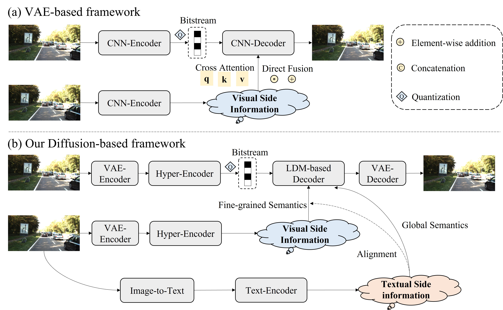
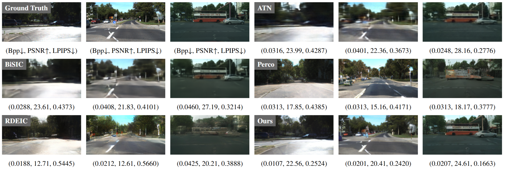
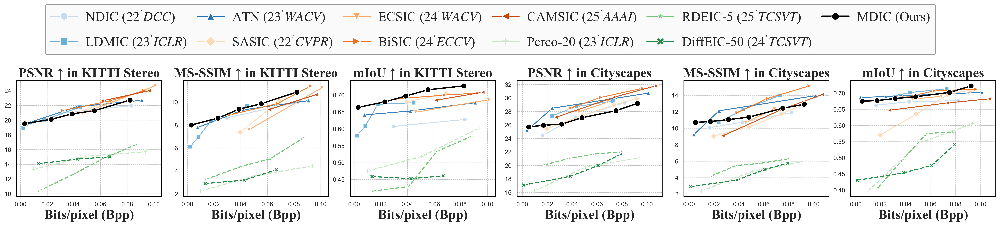

Distributed Image Compression with Multimodal Side Information at Extremely Low Bitrates
Distributed Image Compression (DIC) is crucial for multi-view transmission, especially when operating at extremely low bitrates (< 0.1 bpp). Its core challenge is effectively utilizing side information to achieve high-quality reconstruction under strict bitrate budgets. However, existing DIC approaches struggle to exploit global context and object-level details from side information, leading to local blurring and the loss of fine details in the reconstruction. To address these limitations, we propose a Multimodal DIC framework (MDIC), which, for the first time, leverages side information in a multimodal manner into the DIC paradigm, effectively preserving fine-grained local details and enhancing global perceptual quality in reconstructed images. Specifically, we introduce a text-to-image diffusion-based decoder conditioned on textual side information extracted from correlated images to capture shared global semantics. Moreover, we design a feature-mask generator, supervised by a multimodal fine-grained alignment task, to strengthen the exploitation of visual side information. The generated mask serves two purposes: first, it guides the extraction of fine-grained details from losslessly transmitted side information to preserve the semantic consistency of reconstructed details; second, it regulates the extraction of clustered feature representations from the quantized VQ-VAE embeddings, compensating for category information lost under the extreme compression of the primary image. Extensive experiments on the widely used KITTI Stereo and Cityscapes datasets demonstrate that MDIC achieves state-of-the-art perceptual quality at extremely low bitrates.
1. Motivation

2. Proposed Framework (MDIC)

1. Text-Supervised Visual Mask: Restores category semantics lost in VQ-VAE compression and extracts fine-grained details from visual side information, ensuring semantically faithful reconstruction.
2. Multimodal Denoising: A pre-trained text-to-image diffusion model conditioned on multimodal side information generates high-fidelity perceptual details even when the primary image is heavily compressed (< 0.1 bpp).
3. Qualitative Results

4. Quantitative Evaluation
Extensive experiments demonstrate that MDIC achieves state-of-the-art perceptual quality at extremely low bitrates compared to SOTA DIC, SIC, and LIC methods.


Citation
@inproceedings{xu2026mdic,
title={Distributed Image Compression with Multimodal Side Information at Extremely Low Bitrates},
author={Xu, Guojun and Zhang, Mingyang and Xiang, Jianwen and Tan, Cheng and Yang, Yanchao and Zhou, Junwei},
booktitle={Proceedings of the IEEE/CVF Conference on Computer Vision and Pattern Recognition (CVPR)},
year={2026}
}